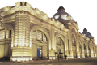
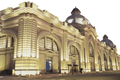

Multimédia
Nesta página encontrará conteúdos multimédia
Fotografias


 



Vídeo
Poesia
São Paulo, a cidade que nunca dorme... Aqui tudo acontece: vida louca, vida boêmia, vida corrida, vida badalada... Enfim, cidade cinzenta, selva de pedras, contraste de cores e sabores... Gastronomia rica, prédios exuberantes e de monumentos gigantes... São tantas belezas e riquezas que chega... Claudinha Ferrea